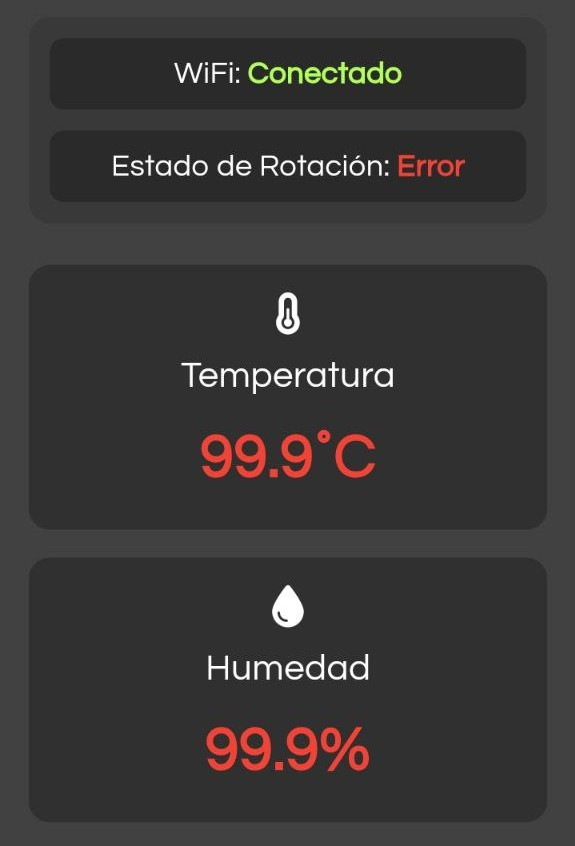
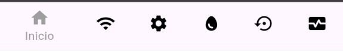

Introducción
Esta aplicación te permite controlar y monitorear tu LibreIncu de forma fácil y eficiente desde tu dispositivo móvil. Vas a poder supervisar la temperatura, humedad, rotación de bandejas y recibir notificaciones importantes sobre el proceso de incubación.
Componentes de la Aplicación
Pantalla Principal (Inicio)
En la pantalla principal encontrás la información más importante de tu Incubadora:
- Estado de Conexión WiFi: Muestra si la incubadora está conectada a internet
- Estado de Rotación: Indica si el sistema de rotación está funcionando correctamente
- Temperatura Actual: Muestra la temperatura en tiempo real con el siguiente código de colores:
- Verde: temperatura dentro del rango configurado
- Rojo: temperatura fuera del rango seguro
- Humedad Actual: Muestra el nivel de humedad con el mismo sistema de colores

Menú de Navegación
En la parte inferior de la pantalla encontrás seis botones de navegación:
- Inicio: Pantalla principal con información en tiempo real
- Conexión: Configuración de WiFi
- Configuraciones: Ajustes generales de la incubadora
- Contador: Control de bandejas y ciclos de incubación
- Rotación: Control manual de la rotación
- Grafana: Visualización de datos históricos

Notificaciones y Alertas
En la parte superior de la pantalla encontrás dos botones de navegación:
- Notificaciones: Tutorial de suscripción al sistema de Notificaciones
- Alertas: Muestra los llamados de atención más importantes
Primera Conexión y Configuraciones Básicas
Instalación
- La aplicación LibrePollo se instala a través de un archico APK
- En caso de ser necesario, permitir "Instalar sin Analizar"
Conexión con LibreIncu
- Conectá y encendé la incubadora
- Ingresá a las configuraciones de WiFi de tu teléfono
- Esperá que aparezca la red WiFi "incu-" (luego del guión cada Incubadora tiene un número único de identificación)
- Conectate desde tu celular con la contraseña: 12345678
- Ya podés abrir la aplicación y comenzar el proceso de configuración de los parámetros básicos de tu LibreIncu
Configuracion de Wifi
Para que la LibreIncu pueda enviar notificaciones móviles a tu teléfono y guardar sus datos historicos en Grafana es necesario que la misma tenga conexión a una red WiFi con acceso a internet. ¿Como hacemos eso? Desde la aplicación LibrePollo! De la siguiente manera:
- Presiona el botón "Conexión" en el menú inferior
- Selecciona tu red WiFi de la lista
- Ingresa la contraseña
- Espera a que se establezca la conexión
- Verifica el estado de conexión en la pantalla principal
- Si la conexión se realizó correctamente, en la pantalla principal el estado de WiFi dirá "Conectado"
Configuraciones Básicas
En esta sección podés modificar los parámetros predeterminados de la LibreIncu de acuerdo a tus necesidades, para ello:
- Presionas el botón de editar que se encuentra al lado del campo que quieras cambiar
- Ingresas el nuevo valor que querés que tenga el campo seleccionado
- Pulsas "Aceptar"
- Listo, ahora tu LibreIncu está adaptada a tus parámetros de producción
Suscripción a Sistema de Notificaciones
Para poder recibir notificaciones móviles sobre el comportamiento de tu LibreIncu cuando no te encontrás cerca es necesario trabajar en conjunto con otra aplicacion, llamada NTFY. Para poder tener esta herramienta realiza lo siguiente:
- Busca "NTFY" en la tienda de aplicaciones de te teléfono (EJ: GooglePlay)
- Instala la aplicaion NTFY
- En la Pantalla Principal de tu aplicación LibrePollo, dirigite al ícono de mensaje que se encuentra en la barra superior
- Seguí el tutorial detallado que se explica en esa pantalla
Funciones de la Aplicación
Control de Bandejas
La sección "Contador" te permite gestionar hasta tres bandejas de incubación:
- Bandeja Verde: Indica que la bandeja está vacía y lista para un nuevo ciclo
- Bandeja Roja: Indica que la bandeja está en uso con un ciclo activo
Para iniciar un nuevo ciclo: 1. Selecciona una bandeja verde 2. Confirma el inicio del ciclo
Para finalizar un ciclo en curso: 1. Selecciona una bandeja roja 2. Confirma que deseas finalizar el ciclo 3. La bandeja volverá a estado verde, lista para un nuevo ciclo
Configuraciones Generales
Como ya vimos antes, en esta sección podes ajustar:
- Nombre de la Incubadora: Identificador único de tu equipo
- Temperaturas: Máxima y mínima permitidas
- Humedad: Niveles máximo y mínimo deseados
- Período de Incubación: Duración del ciclo en días
- Intervalos de Rotación: Frecuencia de rotación de las bandejas
Control Manual de Rotación
La pantalla de rotación te permite: - Rotar las bandejas hacia arriba (↑) - Rotar las bandejas hacia abajo (↓)
De esta forma podemos dejar las bandejas en la posición necesaria para realizar tareas de limpieza, carga y descarga, etc.
Sistema de Alertas
Cuando presionas el ícono de campana que se encuentra en la esquina superior derecha de la pantalla principal, la aplicación te mostrará alertas importantes sobre: - Problemas con el sensor de temperatura/humedad - Problemas de rotación - Problemas de conexión a internet
Visualización de Datos (Grafana)
La sección Grafana te permite: - Ver gráficos históricos de temperatura y humedad - Analizar tendencias - Identificar patrones o problemas
Recordá que para poder ver los datos guardados en Grafana tu teléfono tiene que estar conectado a una Red WiFi con acceso a internet
Solución de Problemas Comunes
La aplicación muestra "Verifique conexión con incubadora"
- Verifica que la incubadora esté encendida
- Asegúrate de que estés conectado a la Red WiFi que tiene el nombre de tu incubadora (ModoAP)
- Presiona "Reintentar"
- Si el problema persiste, revisa la configuración WiFi
Problemas de Rotación
Si ves una alerta de rotación: 1. Verifica que no haya obstáculos físicos 2. Usa los controles manuales de rotación para probar el sistema 3. Si el problema persiste: - Revisá la posición de la bandeja y los sensores Reed - Verificá las conexiones del motor - Controlá que las partes (cinta polea y motor) estén bien asociadas.
Alertas de Temperatura o Humedad
Si recibis alertas constantes: 1. Verifica que los rangos configurados sean correctos 2. Asegurate de que el sensor no se encuentre obstruído 3. Comproba el funcionamiento del sistema de ventilación